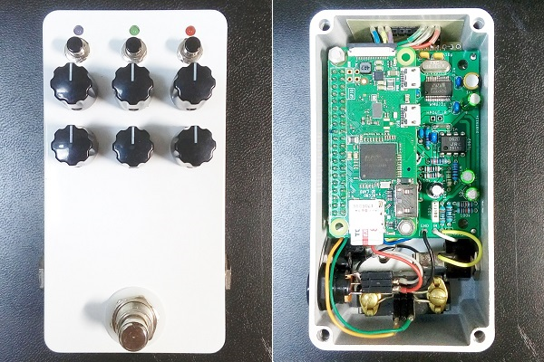
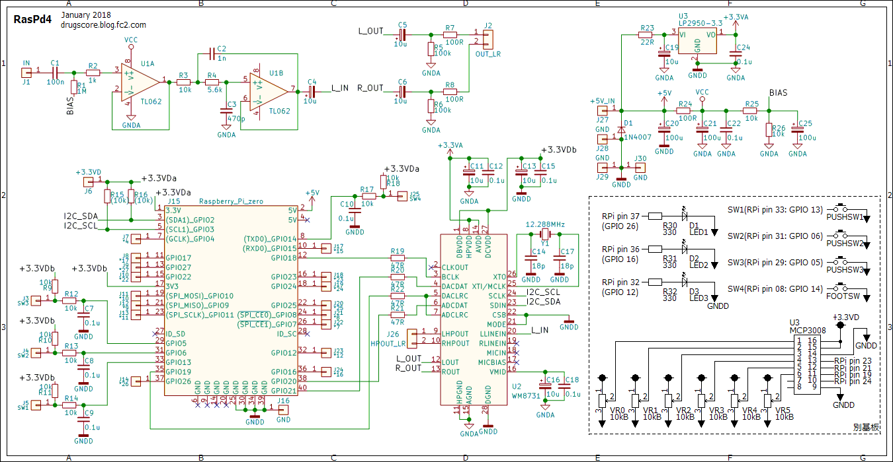
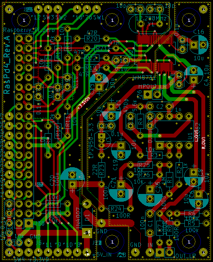

RasPd4 ハードウェア編
2018年01月31日 カテゴリー：Raspberry Pi

微妙に不安定な面があったRasPd2を作り直しました。「3」を飛ばして「4」になっていますが、奇数番号は多機能タイプで、偶数番号はコンパクトタイプということにしておきます。スイッチやポットの基板についてはRasPd2のものを流用しており、外観は変わりません。初めてPCBを基板製造業者に注文しましたが、まぁまぁ納得の出来栄えでした。Raspberry Piは「zero W」です。
▽回路図

入力にローパスフィルターを追加し、出力はヘッドフォン出力ではなくライン出力を使っています。ステレオ入力や出力バッファー追加も考えていたのですが、チップ部品でないと入らなさそうだったので諦めました。ダンピング抵抗は22Ωから47Ωへ上げて様子を見てみます。電源は9Vではなく5Vにしたので、大きな降圧レギュレータが不要となりました。DCジャックには間違えて9Vのプラグを挿さないように、秋月電子で買った「電圧区分4」というものを使用しています。
▽レイアウト

あまり意味はないかと思いますが、一応レイアウトも載せておきます。
GPIOの番号は「*」印で示しており、使わないGPIOについては左端に引き出してあります。Raspberry Piが重なる部分は高さ7mmの電解コンデンサを使いましたが、スペースがあるので横に倒してもなんとか入りそうです。注文した基板は1M（R1）と1K(R2)の印字位置を逆にするというミスがあり、危ないところでした…
ノイズについてはRasPd2とほぼ同じくらいです。ギターが拾うノイズの方が大きいので、まぁOKということにしておきます。最大入出力レベルは0.9Vrms程度で、これも問題ないと思います。以前あったエラー音のような音については、起動して数十秒の間に短くビッと鳴ることがありますが、それ以外では今のところ大丈夫なようです。
WM8731より性能がよいIC（CS4272が候補）を使うとさらに高品質になると思われます。自作するとなると情報が少ないのですが、今後取り組んでみたいところです。
RasPd4 プログラミング編へ